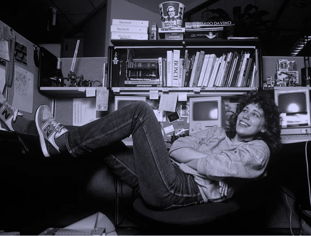
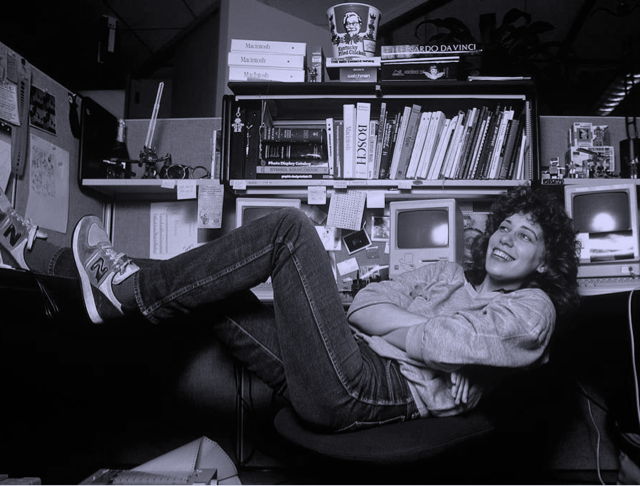

Trabajo remoto
Trabajo remotoEpisodios
De dónde venimos
Our posturings, our imagined left-importance, the delusion that we have some privileged position in the Universe, are challenged by this point of pale light.
Our planet is a lonely speck in the great enveoping cosmic dark. In our obscurity, in all this vastness, there is no hint that help will come from elsewhere to save us from ourselves.
Invitadas/os estelares


 

Algunos de nuestros temas
Trabajo remoto Repensando la programación
Repensando la programación Bases del código
Bases del código Seguridad informática
Seguridad informática